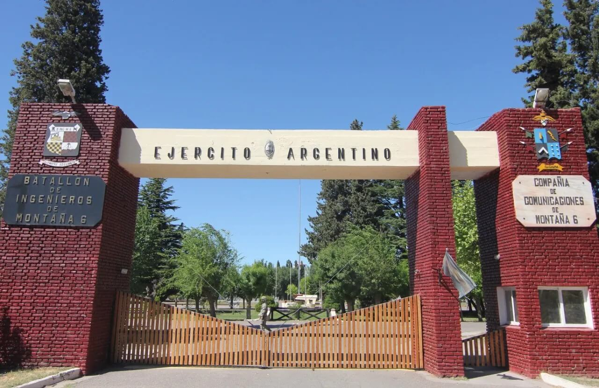

Un repaso por la historia de la unidad

Con los cuadros del “1er Batallón del Regimiento 1 de Ferrocarrileros” se proyectó la creación de una Compañía y un Tren de Puente. El 19 de agosto de 1937 se creó el “Batallón de Zapadores Pontoneros 6”, siendo su asiento de paz la ciudad de SAN CARLOS DE BARILOCHE. Este Batallón tuvo numerosos cambios de nombre, magnitud y ubicación. Su segunda denominación fue “Batallón Nro 6 de Zapadores de Montaña”, en el año 1938. Más tarde, en 1944, fue “Batallón de Zapadores Motorizados” y cambió su asiento de paz a la ciudad de NEUQUÉN. Luego, en 1945, se llamó “Batallón de Zapadores de Montaña”. En 1952 volvió a la ciudad de SAN CARLOS DE BARILOCHE. Doce años después, cambió su denominación a “Compañía de Ingenieros de Montaña 6” y, en el año 1976, se asentó definitivamente en la ciudad de NEUQUÉN, como “Batallón de Ingenieros de Construcciones 181”. En 1982 pasó a llamarse “Batallón de Ingenieros de Construcciones 161” y, finalmente en el año 1992, adoptó su denominaciónactual: “Batallón de Ingenieros de Montaña 6”.
Desde sus inicios, participó del progreso de las provincias de NEUQUÉN y RÍO NEGRO. El Batallón estuvo presente en la construcción de puentes ferrocarrileros y carreteros, en la ruta provincial 5 y en la pavimentación de las ciudades de SAN MARTÍN DE LOS ANDES y JUNÍN DE LOS ANDES.
En el 2008 realizó obras de obtención y potabilización de agua en las localidades de PICÚN LEUFÚ y CHICHINALES, a raíz de las inundaciones registradas. En el 2011 emplazó una planta potabilizadora “FOI” para restablecer el suministro de agua para consumo humano, equipos viales de gran rendimiento, grupos electrógenos y personal para el mantenimiento de la ciudad de VILLA LA ANGOSTURA, producto de la erupción del volcán CHAITÉN, en CHILE. En el 2014 la Unidad tuvo un papel importante en las emergencias, a raíz de las inundaciones provocadas por la lluvia en la ciudad de NEUQUÉN. Destacándose en actividades como evacuación de la población, restablecimiento de caminos hacia barrios abnegados, apoyos con equipos viales y camiones para el mejoramiento de las calles. Ese mismo año, la unidad también participó del Ejercicio de Protección Civil “SOLIDARIDAD”, en VALDIVIA, en la República de CHILE, emplazando dos plantas potabilizadoras “FOI”, una sección de botes de asalto y personal para destacarse como nadadores de combate. Un año más tarde, la región es afectada por la influencia de cenizas volcánicas producto de la erupción del volcán CALBUCO, de la República de CHILE. El Batallón asistió de forma inmediata con DOS (02) plantas potabilizadoras para restablecer el suministro de agua para consumo humano a las ciudades de SAN MARTÍN DE LOS ANDES y JUNÍN DE LOS ANDES, utilizando, además, equipos viales y camiones volcadores para la limpieza de cenizas y mejoramiento de calles. En el año 2020, y en el contexto de la pandemia provocada por el COVID-19, el Batallón brindó ayuda de protección civil en distintas zonas de la provincia. Además, por las intensas nevadas, realizó la apertura del camino de acceso al Refugio Militar “PINO HACHADO”, con una retroexcavadora, y también apoyó a la Municipalidad de CENTENARIO, con la limpieza de canales a cielo abierto para el normal funcionamiento de la localidad. Simultáneamente, participó activamente en el transporte y armado de camas para un eventual uso del espacio DUAM, lugar que la provincia designó para usar dentro del contexto de emergencia que provocó el COVID-19